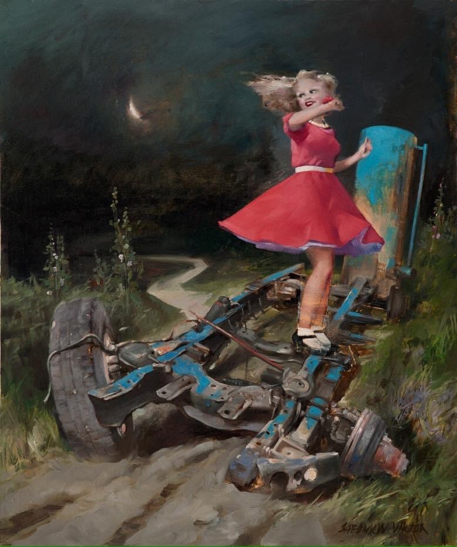
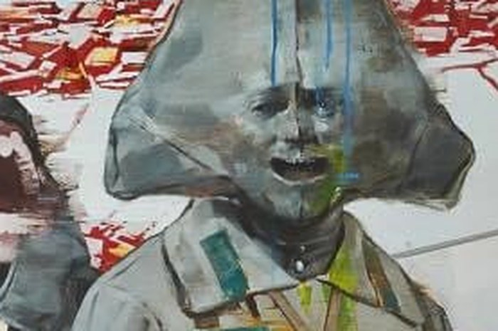
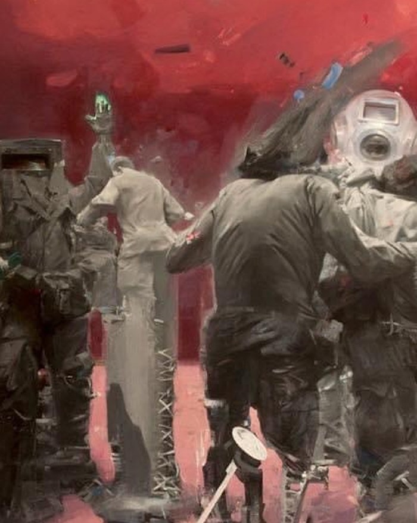
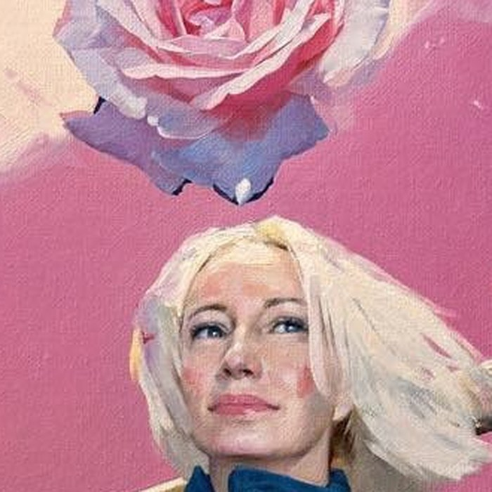
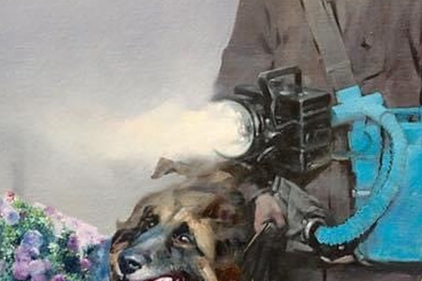

Фантастический реализм · Прага
Виктор
Сафонкин
Сны, в которых человек растворяется в мире вещей —
и остаётся один на один с собственной тенью.







02 — Художник
«Современное общество превращается в кривое зеркало, в котором Человек исчезает, вытесняется из пространства… превращаясь в биомассу, способную только потреблять»
Виктор Сафонкин родился 22 августа 1967 года в Саранске. Художественного образования не получил — живописи не учился, о чём, по собственному признанию, сожалеет. Рисовать начал в 1990-м, первую персональную выставку сделал через два года в Санкт-Петербурге. С 1996 года живёт в Праге.
Его картины — про мегаполис, андеграунд и толпу, в которой человек остаётся космически одинок. Герои стоят в центре полотна, но принадлежат не себе: они уже наполовину вещи, наполовину механизмы, наполовину чужие сны. Отсюда — красное платье на фоне разобранного автомобиля, сарафаны на фоне пожара, улыбка под железной маской.
Техника — масло, плотное письмо, приглушённый фон и одно вырванное из него цветовое пятно. Художник соединяет традицию русской фигуративной живописи с языком сюрреализма, за что его работы попали в собрания музеев фантастического реализма в Европе.
- 1967родился в Саранске, Мордовия
- 1990начал писать маслом, самоучка
- 1992первая персональная выставка, Санкт-Петербург
- 1996переехал в Прагу
- 2000премия альянса Сальвадора Дали
- 2025«Интерфейсы реальности», Саранск
03 — Выставки
Хроника
- 2025МоскваПерсональная выставка, «Столичная галерея художников»
- 2025Саранск«Интерфейсы реальности», МРМИИ им. С. Д. Эрьзи · персональная
- 2020Санкт-Петербург«Зеркала и Зазеркалье», Музей искусства Санкт-Петербурга XX–XXI вв.
- 2017ХагенOSTHAUS MUSEUM HAGEN · совместная
- 2016—2019Малага«Russian Museum», Museo Picasso Málaga · совместная
- 2016СаранскЭкспресс-выставка в рамках симпозиума «Точки соприкосновения»
- 2015Санкт-Петербург«Русский реализм XXI», Русский музей · совместная
- 2014Нью-ЙоркScope NY · арт-ярмарка
- 2014Лос-АнджелесLA Art Show · арт-ярмарка
- 2014КопенгагенArt Copenhagen · арт-ярмарка
- 2013Санкт-ПетербургРусский музей · совместная
- 2013БерлинBerliner Liste · арт-ярмарка
- 2013Кнокке-ХейстArtnokturme · арт-ярмарка
- 2012КиевНациональный музей искусств им. Богдана и Варвары Ханенко · персональная
- 2012ВормсMuseum Heylshof · персональная
- 2011Санкт-ПетербургРусский музей · персональная
- 2010ЖеневаGallery Mimesis · персональная
- 2010ЖеневаHotel Mandarin Oriental · персональная
- 2010Карловы ВарыHotel Plaza · персональная
- 2010Лос-Анджелес«Temple of Visions», «Metamorphosis» (CoproGallery)
- 2010ФихтахIPAX 2010 · совместная
- 1994МоскваЦентральный дом искусств, конкурс «Золотая кисть»
- 1993СаранскЦентр изобразительного искусства
- 1992Нижний НовгородЦентральный городской выставочный зал
- 1992Санкт-ПетербургВыставочный зал на Невском проспекте · первая персональная
Награды
- 1996Приз академии художеств Яна Масарика
- 1996Медаль имени Франца Кафки, Прага
- 1999Титул профессора искусств, академия Greci-Marino, Италия
- 2000Премия альянса им. Сальвадора Дали за достижения в живописи
- 2004Почётный советник в области искусства от Чехии
04 — Коллекции
Музеи и собрания
- Русский музейСанкт-Петербург
- Museo Internazionale d’Arte SurrealistaГаллиполи, Италия
- Museum of Fantastic RealismЗейст, Нидерланды
- Музей Ханса Руди ГигераГрюйер, Швейцария
- Phantasten MuseumВена, Австрия
- Museo Picasso MálagaМалага, Испания
Частные собрания: Гильермо дель Торо (Мексика), Йозеф Киблицкий (Германия), Рарди ван Соест (Нидерланды). Обложки альбомов: Killing Joke, October File, Viva Death.
05 — Контакты
Галерея
По вопросам приобретения работ, выставок и сотрудничества — через галерею Омельченко.
Написать в галерею- Адрес
- Москва, Староконюшенный переулок, 32
м. Арбатская, Кропоткинская, Смоленская - Часы
- Вт–Пт 13:00–20:00
Сб–Вс 12:00–20:00 · вход свободный - Телефон
- +7 917 329-51-75 только сообщения